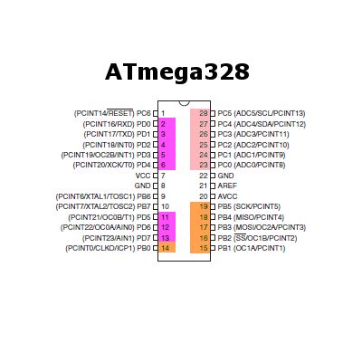
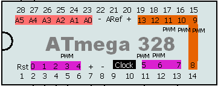

See also the project Rapide328 : a lightweight alternative to Arduino if you don't need usb
See also the project Rapide328 : a lightweight alternative to Arduino if you don't need usbATmega 328
... or simply using only ATmel µC and let the Arduino what it's made for : a wonderful prototyping tool.Memo fact sheet
- Code : 32k Bytes / EEPROM : 1024 Bytes / RAM : 2048 Bytes
ATmega328p is the core of an Arduino. You can build any Arduino compatible board by yourself,
for cheap if you discard the Serial-over-USB IC.
Receipe (bare minimum):
- Quartz 16 MHz %20 2x 20pF condensator
- Voltage regulation : LM7805 %20 100uF condensator (wallwart side) %20 10uF condensator (cirtcuit side)
- ...and the official Arduino duemillanove schematic arduino-duemilanove-schematic.pdf
Afterward, code can be uploaded via a programmer (Pololu AVR Programmer for me) by soldering a nice 6pins connector OR by putting the chip onto an Arduino board. Just remove carefully the original Arduino chip and put it somewhere else. Put the blank chip in the correct place, connect the ISP programmer and upload a bootloader.
#!/bin/bash avrdude -c avrispv2 -p m328p -D -P /dev/ttyACM0 -U flash:w:ATmegaBOOT_168_atmega328.hexThen, you can upload code using Arduino IDE, or you could just directly burn the image you created (search the .hex file). You now have a chip that can run code exactly as is doing your Arduino for something like 1/3rd of the price. Note that I'm talking of the minimal version, excluding the Serial-over-USB, and that of course you will spend time soldering. That's a tradeoff, so up to you. But Arduino is not a end in itself, it's a wonderful prototyping tool; unless you want a perpetual USB connection and don't bother with USB power, Arduino is an overkill. Spend 2 hours preparing your Home-made-Arduino, you'll learn a lot.
You can make a "in place" programmer that you put over your cpu. I loooove the design, I have to make one (I always found that soldering that 6pin connector was a waste of time).
- http://elm-chan.org/works/avrx/report.html (in japanese)
Pins and legs of an ATmega328
On this schema, you can see the chip with its legs (outer figures with no color) and how it is mapped to Arduino's pins. The 3 groups of pins are displayed with colors :
- 0-7 digital,
- 8-13 digital and
- 0-5 analog/digital.
How to get 2 extra pins ?
Simple but you have to think of it : if you don't need precise clock nor speed > 8MHz, just use the internal oscillator and recycle the two crystal pins ! They are PB6 and PB7 and are just waiting for you ! How simple ... (source )Fuses
Setting up the fuse is necessary (and potentially risky) to tell the uC to use a 16MHz crystal with slow startup (?), which speed, make read-only, ... It's not black magic, just be a little careful. There is a wondeful site for preparing the command line for you : http://www.engbedded.com/fusecalc/#WRITE a value of the LOW fuse #avrdude -v -v -p m328p -c avrispv2 -P /dev/ttyACM0 -U lfuse:w:0xE1:m avrdude -v -v -c avrispv2 -p m328p -P /dev/ttyACM0 -U lfuse:w:0xd7:m #READ low fuse value and store in file lofuz.txt in binary (ie: B01001010) avrdude -v -v -p m328p -c avrispv2 -P /dev/ttyACM0 -U lfuse:r:lofuz.txt:b #SET fuses to use a 16MHz crystal (sends an error in the end but just worked fine ... mystery) avrdude -v -v -p m328p -c avrispv2 -P COM1 -U lfuse:w:0xf7:m -U hfuse:w:0xd9:m -U efuse:w:0xff:m
Power consumption
Veeeeery low, like 1 mA when turned on (? to be confirmed).Here's a link on how to make the power consumption go ultra low : http://news.jeelabs.org/2009/05/16/power-consumption-more-savings/
USB connection
Misc links:- V-USB the trendy one http://www.obdev.at/products/vusb/index.html
- USBasp a concurrent http://www.fischl.de/usbasp/
- Project using USBasp http://www.ladyada.net/make/usbtinyisp/download.html
- Project using USBasp http://quinndunki.com/blondihacks/?paged=3
- USART usage http://www.embedds.com/adc-on-atmega328-part-2/
I2C
- The hard way : http://www.embedds.com/programming-avr-i2c-interface/
Interrupts
Timers
- Timer2 interrupt to reuse as millis() ? http://www.embedds.com/avr-timer2-asynchronous-mode/
- http://www.avrbeginners.net/architecture/timers/timers.html
- http://www.protostack.com/blog/2010/09/timer-interrupts-on-an-atmega168/
- http://www.avrfreaks.net/index.php?name=PNphpBB2&file=viewtopic&t=50106
Watchdog
External interrupt and Pin Change interrupt
- Very good tutorial here https://sites.google.com/site/qeewiki/books/avr-guide/external-interrupts-on-the-atmega328
Power considerations
- Clear example to use the watchdog to force the component to sleep for 8sec http://www.arduino.cc/cgi-bin/yabb2/YaBB.pl?num=1258212686
- http://www.seanet.com/~karllunt/atmegapowerdown.html
- http://www.sparkfun.com/tutorials/309
- http://www.arduino.cc/cgi-bin/yabb2/YaBB.pl?num=1270615640
- http://interface.khm.de/index.php/lab/experiments/sleep_watchdog_battery/
$h!t I #&$!ed my Atmega's fuses
That happens to EVERYONE ... and to some more than to others.- http://www.larsen-b.com/Article/260.html
- http://www.avrfreaks.net/index.php?name=PNphpBB2&file=viewtopic&t=86180
- http://www.edaboard.com/thread131804.html
PWM
- Without Arduino IDE (using Winavr) https://sites.google.com/site/qeewiki/books/avr-guide/pwm-on-the-atmega328
Samples project
- Playing with IKEA leds (Tiny2313) http://cauldrondevelopment.com/blog/2009/12/29/a-real-ikea-dioder-hack/
- Breadboard arduino http://arduino.cc/en/Main/StandaloneAssembly
- Standalone Arduino
Interrupts
void setup() {
//D2 is input
DDRD &= ~(1 << 2);
//pullup on D2
PORTD |= (1 << 2);
//interrupt on falling hedge of INT0
EICRA |= (1 << ISC01);
//INT0 enabled
EIMSK |= (1 << INT0);
//Go interrupts !!
sei();
pinMode(13, OUTPUT);
}
void loop() {
// put your main code here, to run repeatedly:
}
volatile int ledState = LOW;
ISR (INT0_vect) {
// if the LED is off turn it on and vice-versa:
if (ledState == LOW)
ledState = HIGH;
else
ledState = LOW;
// set the LED with the ledState of the variable:
digitalWrite(13, ledState);
}